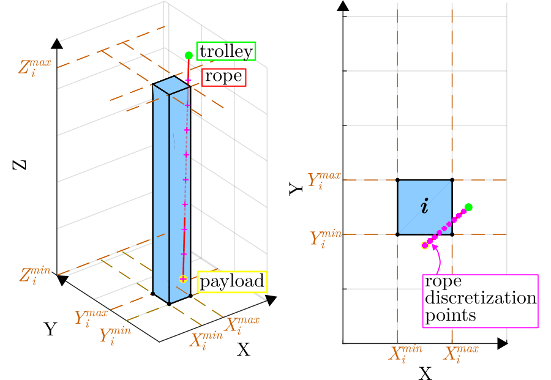
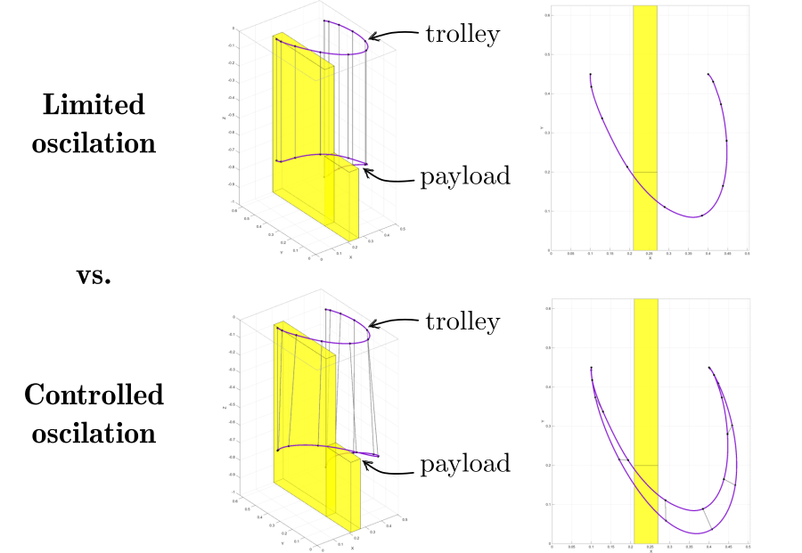
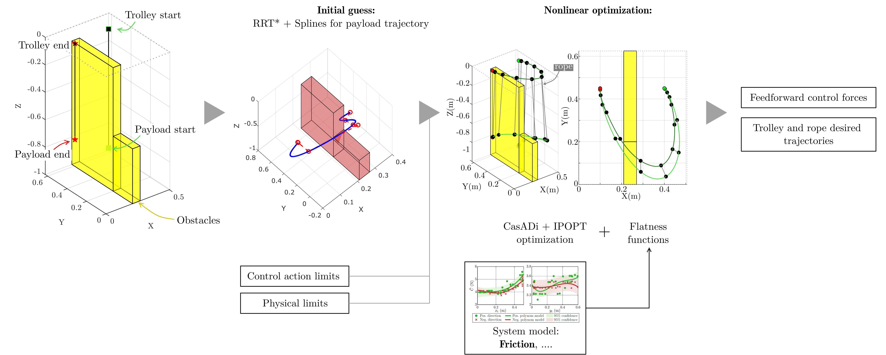
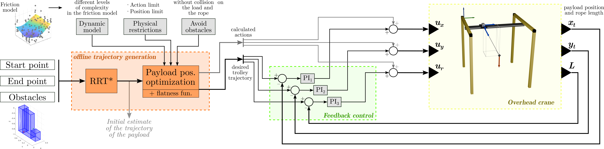
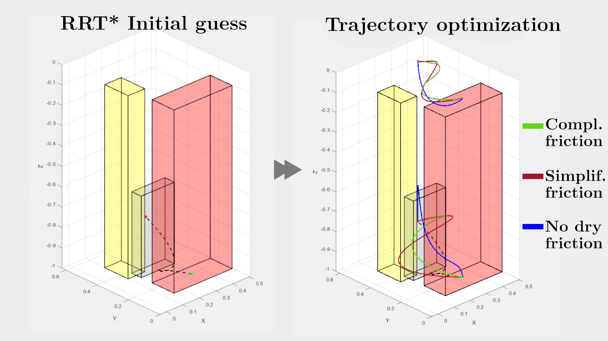
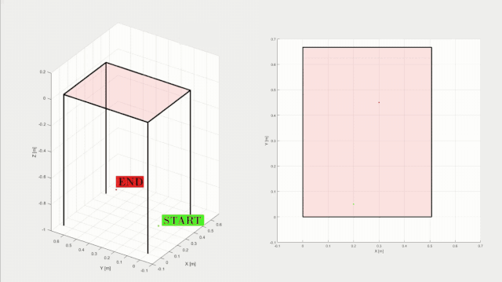

Flatness-based trajectory planning for 3D overhead cranes with friction compensation and collision avoidance
This work has been accepted for presentation at the 23rd IFAC World Congress 2026 in Busan, Korea.
Abstract
This paper presents an optimal trajectory generation method for 3D overhead cranes by leveraging differential flatness. This framework enables the direct inclusion of complex physical and dynamic constraints, such as nonlinear friction and collision avoidance for both payload and rope. Our approach allows for aggressive movements by constraining payload swing only at the final point. A comparative simulation study validates our approach, demonstrating that neglecting dry friction leads to actuator saturation and collisions. The results show that friction modeling is a fundamental requirement for fast and safe crane trajectories.
Trajectory optimization
By exploiting the differential flatness of the 3D overhead crane, we map the full system dynamics (including underactuated states) to a flat output space defined by the payload position. This mathematical transformation allows us to formulate trajectory planning as a constrained optimization problem where complex behaviors are easily integrated:
- Friction-Aware Planning: We incorporate nonlinear friction models (including Coulomb and viscous friction) directly into the optimization. This ensures the planned trajectories are physically feasible and avoid actuator saturation.
- Dual Collision Avoidance: Unlike traditional methods that only consider the payload center, our algorithm monitors potential collisions for both the rope and the payload.
Unlike traditional approaches that strictly limit the payload swing angle to avoid instability, our method actively controls the oscillation to fully exploit the system's dynamics. By leveraging differential flatness, the optimizer can plan more aggressive and efficient movements. This strategy allows the crane to move at higher speeds while mathematically guaranteeing that the payload reaches its destination with zero residual oscillation, effectively "cancelling" the swing exactly at the target point.



Control diagram
Typically, in industrial environments, only the trolley’s position and the rope length are controlled. For that reason, the optimized flat output trajectories are mapped to generate the target paths for the actuated coordinates and the corresponding feedforward control action. We implement a control strategy that combines the optimized feedforward action with a standard feedback term with three independent PI controllers with anti-windup, one for each actuated axis, which track the specified target paths for the trolley and rope.

Simulation results
The influence of the planning model is evaluated based on three key performance indicators to ensure safe and efficient crane operation:
- Collision Avoidance: Monitoring both the payload and the rope to ensure they clear all obstacles throughout the entire path.
- Final Trajectory Time
- Residual Payload Oscillation: Quantified as the maximum displacement of the payload from its final resting position after the trolley stops.
The primary operational goal is to achieve zero final swing without collisions. To demonstrate the necessity of accurate friction modeling, we compare trajectories generated using three dynamic models of varying complexity, all starting from the same calculated initial guess.


This work is part of the project NoRMMAS PID2024-159279OB-I00, funded by

It was founded also in part by the MICIU through the grant FPU24/01878, in part by the Government of Aragón - EU, via grant T45_23R.